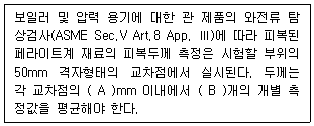

와전류비파괴검사기사 (2019-04-27 기출문제)
1과목: 비파괴검사 개론
1. 방사선투과시험을 적용할 때의 제한사항을 나열한 것으로 틀린 것은?
- 결함의 형태에 따라 검출이 곤란한 경우가 있다.
- 시험체의 두께에는 제한이 없으나 차폐를 해야 한다.
- 시험체 표면의 미세한 균열 검출이 관란한 경우가 있다.
- 방사선에 의한 인체의 장애가 발생할 수 있다.
(정답률: 54%)

2. 주조품과 같이 조대한 결정입자 구조의 금속을 초음파탐상시험을 할 때 발생할 수 있는 현상으로 틀린 것은?
- 잡음 신호가 많아진다.
- 저면 반사에코의 크기가 줄어든다.
- 감쇠현상이 커 침투력이 감소한다.
- 결정입자의 크기가 조대하므로 침투력이 증가한다.
(정답률: 78%)
3. 비자성체의 전도체 표면 및 표면직하 결함을 표면 개구 여부에 관계없이 검출하고자 할 때 가장 적함한 비파괴검사 방법은?
- 자분탐상시험
- 침투탐상시험
- 음향방출시험
- 와전류탐상시험
(정답률: 72%)
4. 다음 중 침투탐상시험의 특성이 아닌 것은?
- 대형 부품의 현장 검사가 가능하다.
- 미세한 표면 불연속의 검출이 가능하다
- 불연속의 깊이를 정확하게 측정할 수 있다.
- 서로 다른 침투액을 혼용하여 사용할 경우 감도가 저감되는 효과가 나타날 수 있다.
(정답률: 78%)
5. 다음 중 0 K(캘빈온도)와 동등한 온도를 나타내는 것은?
- -360°R
- -170°F
- 0℃
- -273℃
(정답률: 73%)
6. Ti 합금 중 α+β 조직으로 구성된 합금으로 열처리가 가능하고 쉽게 용접 단조 및 기계가공 할 수 있는 합금은?
- Ti-6wt%Al-4wt%V
- Ti-5wt%Al-2.5wt%Sn
- Ti-13wt%V-11wt%Cr-3wt%Al
- Ti-11.5wt%Mo-6wt%Zr-4.5wt%Sn
(정답률: 49%)
7. 과공석강의 일반적인 조직은?
- 초석 Fe3C+Pearlite
- γ고용체+Ferrite
- β고용체+Austenite
- δ고용체+Ferrite
(정답률: 47%)
8. 금속을 연마한 후 부식시켜 현미경으로 조직을 관찰하는 경우에 대한 설명으로 옳은 것은?
- 결정면은 결정 입계보다 빨리 부식한다.
- 부식 속도는 부식제에 따라 다르다.
- 결정의 모든 방향으로 부식 속도는 항상 같다.
- 부식 속도는 모든 조직에서 항상 같다.
(정답률: 68%)
9. 베빗 메탈(Babbit metal)에 관한 설명으로 옳은 것은?
- Si을 주성분으로 하고 Cu, Sn을 첨가한 것으로 실리콘계 화이트메탈이다.
- Zn을 주성분으로 하고 Cu, Sn을 첨가한 것으로 아연계 화이트메탈이다.
- Sn을 주성분으로 하고 Cu, Sb을 첨가한 것으로 주석계 화이트메탈이다.
- Pb을 주성분으로 하고 Cu, Sn을 첨가한 것으로 납계 화이트메탈이다.
(정답률: 45%)
10. 시험부의 지름이 5cm인 인장시험편을 표점거리 10cm인 상태로 인장 시험한 결과, 시험 중 최대하중은 500kgf이고, 파단 후 시험부의 지름이 4.5cm였을 때, 인장시험편의 인장강도는 약 몇 kgf/cm2인가?
- 100
- 25
- 50
- 5
(정답률: 44%)
11. Mg-Al계 합금에 소량의 Zn과 Mn을 첨가한 합금은?
- 자마크(zamak)
- 엘렉트론(elektron)
- 하스텔로이(hastelloy)
- 모낼 메탈(monel metal)
(정답률: 52%)
12. Al-Cu-Si계 합금으로 Si에 의하여 주조성을 개선하고 Cu로 파삭성을 좋게 한 합금은?
- 라우탈
- 슈퍼인바
- 문쯔메탈
- 하이드로날륨
(정답률: 76%)
13. 상온에서 순철의 결정 구조로 옳은 것은?
- FCC
- HCP
- BCT
- BCC
(정답률: 56%)
14. 다공질 금속의 제조방법이 아닌 것은?
- 금속분말이나 단섬유를 소결하는 분말야금 방법
- 용탕금속 중에 발포제를 직접 첨가해서 발포시키는 방법
- 중력 상태에서 용융금속 내의 가스를 뽑아내는 방법
- 발포재료 등과 같이 밀도가 작은 재료를 금속과 복합화 시키는 방법
(정답률: 48%)
15. 쾌삭강에서 피절삭성을 향상시키기 위해 첨가하는 방법은?
- C
- Si
- Mn
- S
(정답률: 38%)
16. 용접재를 서로 맞대어 가압하면서 대전류를 통하고 축 방향에 큰 압력을 주어 용접하는 전기 저항 용접법은?
- 업셋 용접
- 마찰 용접
- 스터드 용접
- 프로젝션 용접
(정답률: 45%)
17. 아크 전류가 300A 아크 전압이 25V 용접속도가 20cm/min인 경우 용접 길이 1cm당 발생하는 용접 입열은 몇 J/cm인가?
- 20000
- 22500
- 25500
- 30000
(정답률: 65%)
18. 다음 중 용접 변형을 발생시키는 인자가 아닌 것은?
- 용접 전류
- 아크 전압
- 용접 층수
- 구속 지그
(정답률: 59%)
19. 아크 전류가 일정할 때 아크 전압이 높아지면 용접봉의 용융 속도가 늦어지고 아크 전압이 낮아지면 용접봉의 용융 속도가 빨라지는 아크의 특성은?
- 부저항 특성
- 절연회복 특성
- 전압회복 특성
- 아크길이 자기제어 특성
(정답률: 60%)
20. 전류가 높고 아크 길이가 특히 긴 경우에 발생하며 용접금속의 비산에 의한 용접봉의 손실을 초래하는 결함은?
- 기공
- 오버랩
- 스패터
- 용입 불량
(정답률: 77%)
2과목: 와전류탐상검사 원리
21. 관통형 코일을 사용하여 튜브를 검사할 때 동일한 결함이 내면에 위치할 때와 익면에 위치할 때의 출력신호의 위상관계는?
- 중간상태이다.
- 동일한 위상이다.
- 외면결함의 위상이 내면결함의 위상보다 앞선다.
- 내면결함의 위상이 외면결함의 위상보다 앞선다.
(정답률: 73%)
22. 코일의 임피던스에 영향을 미치는 2가지 주요 인자는?
- 전기 전도도, 주파수, 시험체의 기하학적 구조
- 밀도, 투자율, 주파수
- 전기 전도도, 투자율, 시험체의 기하학적 구조
- 열전도도, 투자율, 전기 전도도
(정답률: 58%)
23. 시험품의 재질 변화나 시험품과 코일간의 상대 위치 변화에서 잘 발생하는 낮은 주파수의 잡음을 억제하기 위한 최적의 방법은?
- 동기 검파
- 필터
- 자기포화장치
- 리젝션(rejection)
(정답률: 64%)
24. 물의 유전율은 공기 유전율의 대략 80배이다. 두 전하사이의 거리가 동일한 경우 쿨롱의 법칙을 고려하여 두 전하사이에 작용하는 힘을 바르게 비교한 것은?
- 물 속에 잠긴 두 전하사이에 작용하는 힘의 크기는 공기 중에 있을 경우에 비해 1/80이다
- 물 속에 잠긴 두 전하사이에 작용하는 힘의 크기는 공기 중에 있을 경우에 비해 80배이다.
- 물 속에 잠긴 두 전하사이에 작용하는 힘의 크기는 공기 중에 있을 경우에 비해 1/6400이다.
- 물 속에 잠긴 두 전하사이에 작용하는 힘의 크기는 공기 중에 있을 경우에 비해 6400배이다.
(정답률: 41%)
25. 내삽형 탐촉자를 사용하여 튜브를 검사할 때 충전(진)율이 감소하면 탐촉자의 임피던스 변화는?
- 증가한다.
- 동일하다.
- 감소한다.
- 변화와 관계 없다.
(정답률: 45%)
26. 시험체가 일반적으로 비자성체일지라도 여러 원인에 의해 국부적으로 강자성을 띨 수도 있다. 다음 중 이와 관계없는 것은?
- 표면에 부착되어 있는 부식 산화물(Fe3O4)
- 주조된 304 스테인리스강에서 편석에 의한 조성의 국부적 변화
- 인코넬 600에서 압축(extrusion)등의 기계가공에 의한 표면의 크롬 고갈
- 큐리 온도 이상으로 비자성체를 가열한 경우
(정답률: 66%)
27. 코일 인덕턴스의 물리적 성질은 다음 중 어는 것과 유사한가?
- 힘
- 에너지
- 관성
- 변위
(정답률: 31%)
28. 코일회로에서 전압에 대한 전류의 지연은 코일 내 특성 요소 중 어떤 것에 의한 것인가?
- 투자율
- 전기 전도도
- 유도성 리액턴스
- 임피던스
(정답률: 30%)
29. 와전류 탐성검사에서 근거로 많이 사용하는 IACS는 무엇의 약자인가?
- Induced Alternating Current System
- Inductively-Activated Comparison System
- Internal Applied Current System
- International Annealed Copper Standard
(정답률: 70%)
30. 탐촉자 임피던스 양중의 하나인 시험 Coil 유도 리액턴스는 다음 중 무엇에 의거 하는가?
- 주파수, Coil 인덕턴스와 Coil 저항
- Coil 인덕턴스만으로
- Coil 저항과 인덕턴스만으로
- 주파수와 Coil 인덕턴스 만으로
(정답률: 44%)
31. 동을 주조할 때 주물의 성질을 조정하기 위하여 미량의 인을 첨가하는데 이때 첨가된 인 함유량을 측정할 수 있는 방법은?
- 잔류자기 측정
- 전도율 측정
- 보자력 측정
- 포화자속밀도 측정
(정답률: 55%)
32. 시험주파수가 400kHz 일 때 와류 표준침투깊이가 1mm이면 주파수를 100kHz로 낮추었을 때 표준침투깊이는? (단, 다른 조건은 동일하다._
- 0.25mm
- 0.5mm
- 2.0mm
- 4.0mm
(정답률: 50%)
33. 타원법(ellipse method)을 이용하는 와전류탐상시험에서 시험체가 건전하여 표준시험폄(reference standard)과 같을 때 CRT 화면상에 나타나는 정상신호는 어떠한가?
- 화면의 원점에 하나의 점으로 나타난다.
- 화면의 원점을 중심으로 한 원으로 나타난다.
- 화면의 수직축을 장축으로한 타원으로 나타난다.
- 화면 수평축에 나란한 직선으로 나타난다.
(정답률: 36%)
34. 1차 및 2차 권선과 함께 관통형 코일(encircling coil)을 사용할 때 여자용 교류전류는 어디서 공급되는가?
- 2차 권선
- 1차 권선
- 설비 제어값 설정에 준하는 1차 및 2차 권선
- 1차 및 2차 권선 둘 다
(정답률: 60%)
35. 와전류탐상 장치의 회로에서 코일의 임피던스 변화는 어떤 결과를 나타내는가?
- 검사주파수의 변화
- 코일에 흐르는 전류의 변화
- 투자율의 변화
- 임피던스 고정
(정답률: 49%)
36. 직경 10mm인 봉을 직경 20mm인 코일 속으로 삽입하였을 경우 충전율 (fill-factor)은 얼마인가?
- 0.25 (25%)
- 0.5 (50%)
- 0.75 (75%)
- 1.0 (100%)
(정답률: 65%)
37. RFEC(Remote Field Eddy Current, 원격장와전류)시험에서 원격장에 놓인 센서에 영향을 미치는 인자 중 가장 거리가 먼 것은?
- 기계적 잡음
- 투자율 변화
- 전기 전도도 변화
- 날카로운 균열
(정답률: 45%)
38. 와전류탐상시험의 임피던스 변화 결과를 CRT(음극선관) 상에 나타내는 검출 방법은?
- 임피던스법(impedance method)
- 위상 분석법(phase analysis method)
- 변조 분석법(modulation analysis method)
- 브릿지 평형법(bridge balance method)
(정답률: 52%)
39. 와전류탐상시험에서 평면형 탐촉자를 사용하여 판재를 검사할 때 탐촉자와 시험체 사이의 간격변화로 인하여 나타나는 신호를 무엇이라 하는가?
- 표피효과
- 충전율
- 리프트-오프 효과
- 가장자리 효과
(정답률: 79%)
40. 다음 중 와전류의 침투깊이를 조절할 수 있는 인자는? (단, 동일한 시험체(도체)인 경우이다.)
- 교류의 세기
- 투자율 및 유전율
- 주파수
- 전압의 세기
(정답률: 72%)
3과목: 와전류탐상검사 시험
41. 와전류탐상검사에서 리프트 오프(lift-off)가 클 경우, 충분한 신호를 얻기 위한 방법이 아닌 것은?
- 전류를 증가시킨다.
- 시험 주파수를 높인다.
- 코일의 권선수를 증가한다.
- 직경이 큰 코일을 사용한다.
(정답률: 32%)
42. 다음 중 와전류 침투깊이를 감소시키는 것은?
- 시험주파수 혹은 시험체의 전도도 감소
- 시험주파수 감소 혹은 시험체의 전도도 증가
- 시험주파수, 시험체의 전도도 및 투자율의 증가
- 시험체의 투자율 감소
(정답률: 47%)
43. 다음 중 표면 프로브 코일(surface probe coil)을 주로 사용하는 곳은?
- 열교환기용 전열관의 보수검사
- 열간 가공되는 선재의 탐상
- 냉간 가공되는 봉재의 탐상
- 항공기 엔진브래이드의 탐상
(정답률: 61%)
44. 와전류 시험을 수행할 때 감도의 설정방법이 잘못된 것은?
- 탐상감도는 위상, 필터, 리젝션 등이 모든 시험 조건의 설정이 완료된 후에 최종적으로 설정해야 한다.
- 대비시험편을 사용해 수행한다.
- 시험품의 시험과 동일한 이송 속도, 자기포화, 시험 주파수로 설정한다.
- 인공결함의 크기가 보통 기록계 full scale의 60∼80%가 되도록 조정한다.
(정답률: 62%)
45. 관의 생산라인 검사에서 외삽형 보빈 탐촉자 검사 결과 기본 주파수, 2배 주파수, 1/3배 주파수에서 탐촉자의 진동(Wobble) 신호와 같은 특성을 갖는 지시는?
- 관내면 결함
- 투자율 변화나 깊은 균열
- 관외면 결함
- 찌그러짐 결함
(정답률: 65%)
46. 와전류탐상에서 프로브형 코일과 시험편의 거리를 나타내는 용어는?
- 충진율(fill factor)
- 모서리 효과(edge effect)
- 단말효과(end effect)
- 떠오름(lift-off)
(정답률: 49%)
47. 다음 중 관의 와전류탐상검사에서 자기 비교형 코일을 사용해 가장 쉽게 검출할 수 있는 것은?
- 짧은 형태의 결함
- 점진적인 직경 변화
- 크고 긴 형태의 결함
- 점진적인 전도도 변화
(정답률: 53%)
48. 회전형 프로브 형식을 적용하여 와전류탐상을 할 경우 가장 쉽게 검출할 수 있는 결함은?
- 표면 결함 또는 표면하 결함의 탐지
- overlaps 또는 seam과 같은 표면 결함의 탐지
- 배관 내부 결함 또는 튀어 나옴
- 내부 깊숙한 기공에 의한 결함
(정답률: 45%)
49. 알루미늄 합금에 대한 와류시험에서 시험주파수를 10kHz로 설정하였을 때의 유효침투깊이가 4mm였다. 주파수를 100kHz로 설정할 경우 유효 침투깊이는 대략 얼마가 되는가?
- 1.25mm
- 2mm
- 0.4mm
- 8mm
(정답률: 66%)
50. 와전류탐상으로 도막 두께를 측정할 때 고려사항이 아닌 것은?
- 끝부분 영향
- 탐상면의 곡률
- 표면상태
- 표면색상
(정답률: 81%)
51. 일반적인 시험 코일의 선택 방법이라고 볼 수 없는 것은?
- 시험품의 크기와 형태
- 사용되는 주파수
- 검사할 결함의 크기와 형태
- 시험품 보관 상태
(정답률: 74%)
52. 관통코일 와류탐상장치에서 보정표준시험편의 사용목적으로 틀린 것은?
- 검사장비의 신뢰도 보증
- 검출 가능한 결함의 대략적인 깊이 보정
- 시험 주파수 측정
- 신호의 재현성 검증
(정답률: 26%)
53. 다음 중 결함 검출이 가장 용이한 경우는?
- 결함이 와전류의 방향에 나란하게 있을 때
- 결함이 와전류의 방향에 수직하게 있을 때
- 와전류의 위상이 코일전류의 위상과 90도 차가 있을 때
- 와전류의 위상과 코일전류의 위상이 서로 같을 때
(정답률: 69%)
54. 강관의 와전류탐상시험에서 잡음이 증가하는 원인은?
- 탐상기의 감도 저하
- 시험코일의 단선
- 직류여자전류의 저하
- 발진기 출력의 저하
(정답률: 26%)
55. 관통형 코일을 사용했을 경우의 단점은?
- 한번에 전 부위를 판독할 수 있다.
- 고속의 작업이 가능하다.
- Probe 마모 문제가 없다.
- 원주 방향의 불연속부의 위치구별이 어렵다.
(정답률: 76%)
56. 상호유도 코일에서 1차 코일의 기능은?
- 시험체를 직류자화시킨다.
- 시험체에 와전류를 발생시킨다.
- 시험체에서의 와전류 변화를 검출한다.
- 2차 코일과의 주파수 차이를 검출한다.
(정답률: 64%)
57. 발전설비에 사용되는 열교환기내의 튜브검사에서 와전류탐상검사로 검출된 결함을 분석, 판단하는 인자가 아닌 것은?
- 신호 위상(phase)
- 신호 진폭(amplitude)
- 신호 시간(time)
- 신호 파장(wave length)
(정답률: 61%)
58. 와전류탐상시험에서 유도되는 와전류의 밀도는 시험체의 표면으로부터 지수함수적으로 감소한다. 그렇다면 유도와전류의 깊이에 따른 plase angle 은 어떻게 되는가?
- 깊이에 무관하다.
- 깊이에 따라 선형적으로 plase angle lag이 증가하며 주파수에 따라 달라진다.
- 지수 함수적으로 plase angle이 증가한다.
- 깊이에 따라 선형적으로 plase angle lag 이 증가하나 주파수에는 무관하다.
(정답률: 57%)
59. 표준침투깊이[δ]는 전류 밀도가 시험체 표면전류밀도의 1/e로 떨어지는 표면으로부터의 깊이이다. 그렇다면 그 전류밀도는 표면치의 약 몇 %로 감소하는가?
- 37%
- 24%
- 13.5%
- 27%
(정답률: 59%)
60. 발진기에서 여자전류에 의해 와전류를 발생시켜 검사체에 존재하는 결함 등으로 인한 와전류의 변화를 임피던스변화로서 검출하게 하는 것은?
- 시험코일
- 여과기
- 이상기
- 증폭기
(정답률: 36%)
4과목: 와전류탐상검사 규격
61. 강의 와류탐상 시험방법(KS D 0232)에서 대비시험편의 사용목적에 해당되지 않는 것은?
- 시험장치의 성능확인
- 시험조건의 설정
- 시험조건의 확인
- 시험코일의 치수 확인
(정답률: 65%)
62. 강관의 와류탐상검사 방법(KS D 0251)에 사용하는 장치가 아닌 것은?
- 탐상기 보호장치
- 관의 이송장치
- 자동경보 장치
- 신호 기록장치
(정답률: 53%)
63. 티타늄관의 와류탐상검사 방법(KS D 0074)에서 탐상방법에 대한 사항과 일치하지 않는 것은?
- 시험 주파수는 1kHz∼512kHz 범위에서 선택
- 비교시험편의 인공홈을 충분히 검출하는 주파수
- 인공홈을 충분히 검출하는 시험코일
- 매시간 마다 탐상기의 감도를 확인
(정답률: 59%)
64. 강의 와류탐상 시험방법(KS D 0232)에서 시험감도 유지의 적정성 확인은 연속적으로 시험하는 경우 몇 시간마다 수행하여야 하는가?
- 2시간
- 3시간
- 4시간
- 8시간
(정답률: 69%)
65. 다음 중 강의 와류탐상 시험방법(KS D 0232)에 사용되는 대비시험편의 인공 홈의 종류로 옳은 것은?
- 각진 홈
- 원형 홈
- 펀칭 홈
- 사각 구멍
(정답률: 73%)
66. 보일러 및 압력 용기에 대한 관 제품의 와전류탐상검사(ASME Sec.V Art.8)에서 대비시험편에 포함되어야 할 교정용 불연속이 아닌 것은?
- 외경 3/4in.이하의 튜브에서 직경 0.⑤2in.의 벽을 100% 관통하는 드릴구멍
- 외경 3/4in.를 초과하는 튜브에는 직경 0.067in.의 벽을 100% 관통하는 드릴구멍
- 폭이 1/16in.이고 튜브내면으로부터 10% 깊이를 갖도록 가공한 원주홈
- 폭이 1/8in.이고 튜브내면으로부터 10% 깊이를 갖도록 가공한 원주홈
(정답률: 54%)
67. 티타늄관의 와류탐상검사 방법(KS D 0074)에서 규정한 비교시험편에 대한 설명으로 틀린 것은?
- 사용목적은 탐상장치의 감도를 설정하는데 있다.
- 재료는 검사하는 관과 동등한 재질이어야 한다.
- 인공홈의 종류는 각진홈, 드릴구멍, 줄홈이 있다.
- 인공홈의 가공은 방전 및 기계가공을 한다.
(정답률: 42%)
68. 보일러 및 압력 용기에 대한 표준 와전류탐상검사(ASME Sec.V Art.26 SE-243)에서 대비시험편의 끝단부근에 연속한 여러 개의 인공결함을 만들었다면 이것은 무엇을 점검하기 위한 것인가?
- 끝단효과(End Effect)
- 충전율(Fill Factor)
- 리프트-오프(Lift-off)
- 홀 효과(Hall Factor)
(정답률: 79%)
69. 보일러 및 압력 용기에 대한 관 제품의 와전류탐상검사(ASME Sec.V Art.8)에서 규정하고 있는 검사 장비의 필수 교정시점이 아닌 것은?
- 시험체의 외경과 두께가 변경되는 시점
- 연속제조 공정의 종료 시
- 검사장치에 이상 발생 시
- 매 시간마다
(정답률: 76%)
70. 다음 문장의 괄호 A, B에 들어갈 숫자로 옳은 것은?

- A : 3, B : 2
- A : 5, B : 2
- A : 6, B : 3
- A : 10, B : 3
(정답률: 62%)
71. 보일러 및 압력 용기에 대한 관 제품의 와전류 탐상검사(ASME Sec.V Art.8 App)에서 내삽형 코일법의 시험장치는 기본주파수에 대해 교정시험편의 관통구멍 신호가 CRT(또는 신호출력 화면)에서 위상각을 몇 도로 조정하는가?
- 40°
- 45°
- 60°
- 90°
(정답률: 49%)
72. 티타늄관의 와류탐상검사 방법(KS D 0074)에서 사용하는 비교시험편 중에서 각진 홈 N-20 비교시험편의 치수 및 치수 허용차로서 옳지 않은 것은?
- 홈의 깊이은 0.20mm이다.
- 홈의 깊이 허용차는 ±15%이다.
- 홈의 길이는 10mm 이상 25mm 이하이다.
- 홈의 나비는 1.0mm 이하이다.
(정답률: 27%)
73. 보일러 및 압력 용기에 대한 관 제품의 와전류 탐상검사(ASME Sec.V Art.8)에서 시험보고서르 작성할 때 다음 중 포함되지 않아도 되는 사항은?
- 시험주파수
- 프로브의 크기와 종류
- 관의 재질, 직경 및 두께
- 자연 결함의 깊이 및 길이
(정답률: 64%)
74. 보일러 및 압력 용기에 대한 표준 와전류탐상검사(ASME Sec.V Art.26 SE-243)에 따라 차동형 관통코일을 사용하여 동관을 탐상할 때 검출되지 않을 수도 있는 불연속인 것은?
- 롤 자국
- 미세한 균열
- 튜브 전길이에 걸쳐 연속된 긁힌 자국
- 튜브 길이 방향의 짧은 균열
(정답률: 64%)
75. 강의 와류탐상 시험방법(KS D 0232)에 따라 바깥지름이 21mm인 원형봉강을 와류탐상시험할 때 권선의 안지름이 22mm이고, 권선의 바깥지름이 24mm인 시험코일을 사용하였다면 충전율은 약 얼마인가?
- 76%
- 83%
- 91%
- 95%
(정답률: 29%)
76. 강관의 와류탐상검사 방법(KS D 0251)에서 규정하는 탐상강도 조정에서 두께 3mm이상의 용접 스테인레스 강관(보일러 열교환기용 스테인레스강 냉간 가공 아크 용접강관은 제외)에 사용하는 인공홈은?
- F - 15
- F - 20
- F - 25
- F - 30
(정답률: 45%)
77. 강의 와류탐상 시험방법(KS D 0232)에 따른 인공 홈의 종류 및 치수에 관한 설명으로 틀린 것은?
- 인공 홈의 종류는 각진 홈과 드릴구멍으로 분류한다.
- D-25%는 홈 깊이가 관 호칭 두께의 25%인 드릴 구멍을 나타낸다.
- N-0.6은 깊이가 0.6mm인 각진 홈을 나타낸 것이다.
- 원형 봉강인 경우 인공 홈은 각진 홈으로 한다.
(정답률: 38%)
78. 강의 와류탐상 시험방법(KS D 0232)에 따라 원형 봉강 및 강관에 존재하는 결함을 검출하기 위한 시험방법의 규정 내용으로 틀린 것은?
- 시험시기는 가공 또는 처리 공정에서 적절한 시기를 선택해서 수행한다.
- 시험감도의 확인은 적정하게 유지되고 있는지 시험작업 종료 시 및 연속적으로 시험하는 경우 4시간마다 확인한다.
- 전처리는 검사를 수행하기 전 시험체에서 시험에 해로운 부스러기, 절단면의 거스러미 등을 제거한다.
- 이송장치의 센터링은 대비시험편에 가공된 홈이 1개일 경우, 검사속도보다 빠르게 시험편을 코일 밖으로 통과시켜 목표값의 ±30% 이내가 검출되도록 조정한다.
(정답률: 67%)
79. 보일러 및 압력 용기에 대한 표준 와전류탐상검사(ASME Sec.V Art.26 SE-215) 코드에서 규정하는 알류미늄 합금용 1차 대비시험편에 대한 설명으로 맞는 것은?
- 4개의 평저공이 동일한 직경이어야 한다.
- 관의 중앙부에 위치해야 한다.
- 구멍간의 간격은 100mm로 한다.
- 구멍과 관 끝부분과의 간격은 최소 100mm로 한다.
(정답률: 42%)
80. 설치되어 있는 동관을 내삽형 코일을 사용하여 보일러 및 압력 용기에 대한 표준 와전류탐상검사(ASME Sec.V Art.26 SE-243)에 따라 평가 및 판정을 할 때 결함신호의 형상 및 크기에 영향을 줄 수 있으므로 다음 중 고려해야 할 사항은?
- 화전장치
- 자기간섭
- 관 지지물
- 프로브 코일의 주사방향
(정답률: 49%)